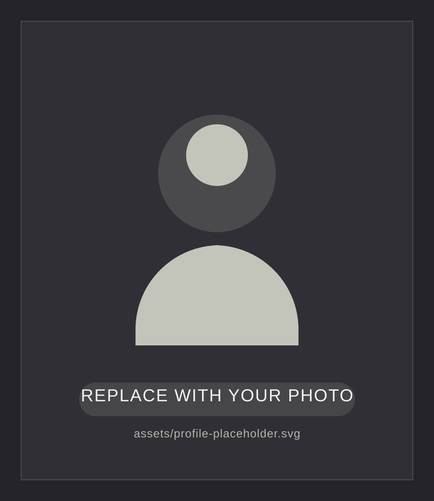

SystemVerilog • FPGA
32-bit Multi-Cycle CPU
A custom multi-cycle CPU with Harvard-style memory, control FSM, arithmetic and branching support, and board-level bring-up on FPGA.
Add case study
Portfolio
I am an Electrical Engineering student focused on RTL design, FPGA implementation, digital verification, and computer architecture.
About Me
I enjoy designing digital systems that are clean, testable, and practical to implement on real hardware. My interests are centred around RTL design, verification, FPGA bring-up, timing-aware design, and microarchitecture.
This website is a simple space to highlight the projects, design choices, and technical work I care most about. You can use it as a starting point and swap the text, links, resume, and profile image with your final versions.
Highlighted Projects
A custom multi-cycle CPU with Harvard-style memory, control FSM, arithmetic and branching support, and board-level bring-up on FPGA.
Add case studyA stopwatch built with debounced inputs, modular RTL blocks, and structured verification to validate counter and display behaviour.
Add case studyA Cortex-M3 project featuring an LCD UI, media controls, and interactive games, with an emphasis on embedded system design and user interaction.
Add case studyA resume-to-job matching platform that combines OCR, filtering, vector similarity, and a cloud-based workflow for searching and ranking roles.
Add case studyAccomplishments
Supported engineering work, coordination, and technical tracking while contributing to a fast-moving utility environment.
Wrote a 20-page IEEE-style report analysing design, safety, cost, and grounding tradeoffs for solar farm placement near HV lines.
Iterated on RTL and implementation decisions to move hardware designs toward stable FPGA timing and cleaner integration.
Used structured testbenches, assertions, and debugging to build confidence in functional correctness before hardware deployment.
Contact
Replace the contact details below with your final public links. The GitHub link is already set, and the LinkedIn icon in the header is ready for your profile URL.